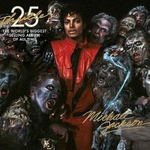

|  |
|
(Lyrics) It's close to midnight and something evil's lurking In the dark Under the moonlight you see a sight that almost stops Your heart You try to scream, but terror takes the sound before You make it You start to freeze as horror looks you right between The eyes You're paralyzed 'Cause this is thriller, thriller night And no one's gonna save you from the beast about to Strike You know it's thriller, thriller night You're fighting for your life inside a killer Thriller tonight You hear the door slam and realize there's nowhere Left to run You feel the cold hand and wonder if you'll ever see The sun You close your eyes and hope that this is just Imagination But all the while you hear the creature creepin' up Behind You're out of time 'Cause this is thriller, thriller night There ain't no second chance against the thing with Forty eyes You know it's thriller, thriller night You're fighting for your life inside a killer Thriller tonight Night creatures call And the dead start to walk in their masquerade There's no escapin' the jaws of the alien this time (They're open wide) This is the end of your life They're out to get you; there's demons closing in on Every side They will possess you unless you change the number on Your dial Now is the time for you and I to cuddle close Together All through the night I'll save you from the terrors on The screen I'll make you see That it's a thriller, thriller night 'Cause I can thrill you more than any ghost Would ever dare try Girl, this is thriller, thriller night So let me hold you tight and share a killer, diller Chiller Thriller here tonight That it's a thriller, thriller night 'Cause I can thrill you more than any ghost Would ever dare try Girl, this is thriller, thriller night So let me hold you tight and share a killer, diller Darkness falls across the land The midnight hour is close at hand Creatures crawl in search of blood To terrorize y'awl's neighborhood And whosoever shall be found Without the soul for getting down Must stand and face the hounds of hell And rot inside a corpse's shell The foulest stench is in the air The funk of forty thousand years And grizzly ghouls from every tomb Are closing in to seal your doom And though you fight to stay alive Your body starts to shiver For no mere mortal can resist The evil of the thriller |
(Letra en Español) Es cerca de medianoche y algo malo está acechando en la oscuridad Bajo la luz de la luna tienes una visión que paraliza tu corazón Intentas gritar pero el terror atrapa el sonido antes de que lo hagas Empiezas a congelarte mientras ves el horror entre los ojos Estás paralizada Porque esto es miedo, noche terror Y nadie te va a salvar de la bestia que te va a golpear Sabes que es miedo, noche terror Estás luchando por tu vida dentro de una asesina Noche de horror Oyes que que la puerta se cierra de golpe y comprendes que no hay lugar donde correr Sientes la mano fría y te preguntas si alguna vez verás el sol Cierras tus ojos y esperas que esto sea sólo imaginación Pero al rato oyes que la criatura está arrastrándose atrás Estás fuera de tiempo Porque esto es miedo, noche terror No hay segunda oportunidad contra la cosa de cuarenta ojos Sabes que es miedo, noche terror Estás luchando por tu vida dentro de una asesina Noche de horror Las criaturas de la noche llaman Y los muertos empiezan a caminar con sus vestimentas No hay ningún escape de las mandíbulas de los alienígenas esta vez Ellos están por todas partes Éste es el fin de tu vida Ellos están fuera de alcanzarte, hay demonios que rodean en cada lado Ellos te poseerán a menos que cambies el número de tu dial Ahora es el tiempo para que tu y yo nos abracemos fuerte Toda la noche yo te salvaré de los terrores de la pantalla Te haré ver Que esto es miedo, noche terror Porque puedo estremecerte más de lo que cualquier fantasma se atrevería a intentar Chica, esto es miedo, noche de terror Pues permíteme sostenerte fuerte y compartir una asesina, escalofriante, Noche de terror Porque esto es miedo, noche terror Y nadie te va a salvar de la bestia que te va a golpear Sabes que es miedo, noche terror Estás luchando por tu vida dentro de una asesina Noche de horror La oscuridad cae por la tierra La medianoche se está acercando Las criaturas se arrastran en busca de sangre Para aterrorizar al vecindario Y a quien quiera que encuentren Sin el alma por bajar Debe estar de pie y enfrentar los perros del infierno Y podrirse dentro del caparazón de un cadáver El hedor mas asqueroso está en el aire Los cuarenta mil años Y los grises de cada tumba Están acercándose para sellar tu sentencia Y aunque luchas para sobrevivir Tu cuerpo empieza a estremecerse Lo que ningún mero mortal puede resistir La maldad del terror |